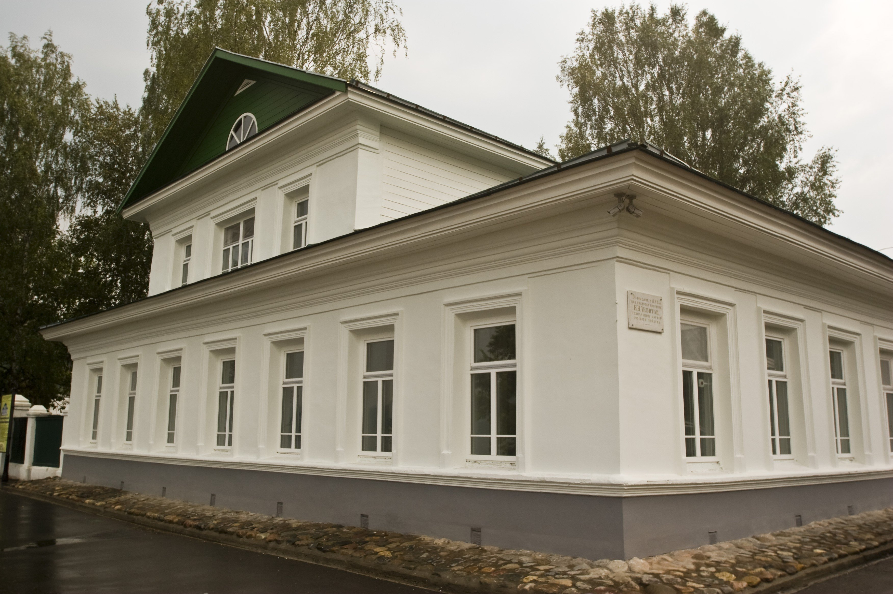
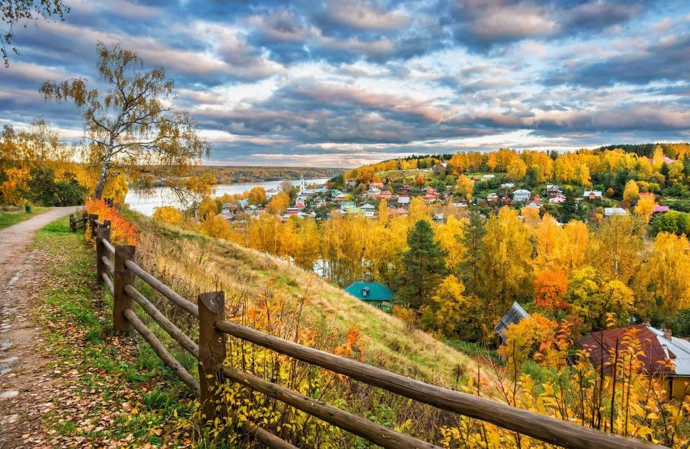
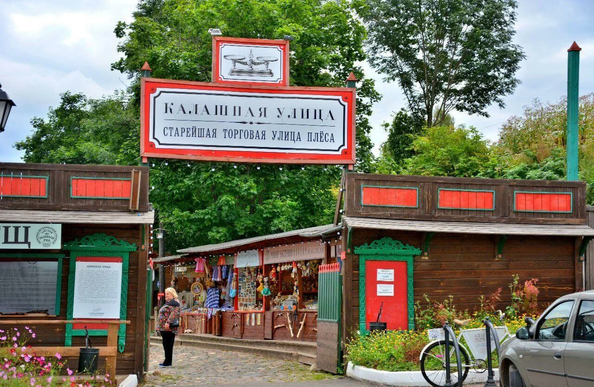

Плёс
Плёс — город на севере Ивановской области. Расположен на правом берегу Волги, в устье речки Шохонки. Был основан в XII веке на землях, принадлежавших финно-угорскому племени меря. В 1888-1890 гг. в Плёсе жил русский художник И. Левитан. Известна березовая роща Левитана, где он в ней, по преданию, закончил работу над картиной «Березовая роща». Всего с Плёсом связано 200 работ И. Левитана.

Музей, посвященный великому художнику-пейзажисту, является частью Плёсского государственного историко-архитектурного и художественного музея-заповедника. Впервые Исаак Левитан побывал здесь весной 1888 года вместе со своими друзьями – художниками Кувшинниковой и Степановым. Музей включает два экспозиционных зала. Первый посвящен творческой биографии художника, а во втором размещены его подлинные работы.

Соборную гору не зря называют сердцем города, ведь именно здесь началась история Плеса. В ту эпоху на горе стояла крепость, основанная в XV веке князем Василием I, но до наших дней, увы, дошли лишь остатки рвов и оборонительных валов. Тем не менее после многочисленных раскопок археологам удалось воссоздать макет крепости, состоявшей из 3-х различных укреплений. У Соборной горы есть и другое название — Чувиль, что в переводе означает «птичий город».

Ни один экскурсионный маршрут по Плесу не обходится без посещения Калашной улицы — до XVIII века главной городской артерии. После обустройства набережной и города её след затерялся между многочисленных домов, но несколько лет назад, когда туристическая популярность Плеса стала возрастать, историки и энтузиасты принялись за восстановление этой древнейшей улицы.
